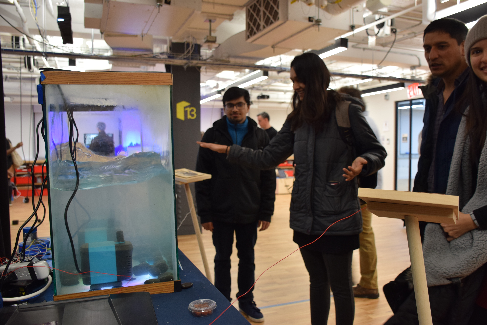

In my previous blog post I talk about how I got the inspiration for my final from human circuits and water, and how I wanted to combine those things. Though my idea started out very vague still, there was one very important thing in my mind: if you're working with water, it needs to be somehow contained.
Link to a rough draft of the project: here
I started out with a fish tank that I used as a kid. It was pretty big, maybe 50 gallons or so, so I thought I could have some good interactions in there whatever I decided to end up doing.
Once I knew what I'd hold the water in, I needed to get started on a touch circuit. I googled for "human touch circuit" on Google and found this diagram, I followed the instructions and duplicated the circuit that's shown in the diagram, but it didn't seem to be working correctly. What I figured out by using the serial monitor was that the threshold, as set in the diagram, was way too low. I was getting values in the thousands, and once I reset the threshold the circuit worked perfectly. In the photo, you can see the little LED is lighting up when the wires are touched.
After figuring out the touch sensor, I needed to decide what it would turn on. In my head, I imagined there would be some mechanism that made the water churn until the two wires were touched, and then the water would calm down and there would be lights shining up from the bottom of the tank. The problem was, I didn't know what I could do to make the water churn. I originally thought of having an air pump which would be attached to a hose, and I thought I could lay the hose along the bottom of the tank and have the pump blow bubbles through the tank. The problem was, I didn't have an air pump and didn't really know where to find one. I talked with Nicole Cabalquinto, another student, because I heard she had worked with water before, and she told me she had an aquarium pump I could borrow. Here is a link to the pumps I used on Amazon. Below is a picture of my paper prototype, where I considered the idea of bubbles and haptic sensors you would step on with bare feet.
I tried the pumps in my kitchen sink and found they were... quite forceful. With that in mind, I decided to try laying the pumps on their sides in the tank, so they would push the water around and make it churn. I also bought some black sand and glitter to put in the tank, so you could tell the water was spinning around. This looked okay as a demo, but I wasn't sure what the final product would look like. I also realized I'd need a way to trigger the pumps to turn on and off, so I bought a four-outlet power relay from Adafruit.
Though originally my plan had been to have people complete the circuit by standing on conducive panels without shoes and then touching, during playtesting a lot of people told me they didn't want to take their shoes off. This made sense to me, and I also realized that at the show people would be moving by really fast. With that in mind, I decided to switch my idea to use hand panels instead of foot panels. Also at playtesting I came up with the idea of adding pressure sensors so the installation would know when people were there, which would also help to get people into the positions I wanted, so the conducive foot panels became pressure sensors.
To make the pressure pads, I followed this guide to make the pressure pad. Originally the touch switch and the pressure switches had a problem, which was that there was so much noise that the readings were going all over the place and the switches would turnn on and off rapidly. To solve the problem, I took the averages of a series of readings instead of just using the single reading. This smoothing effect made the switches work the way I wanted to. Below are a few pictures of the pressure pads, including inside.
I connected the Adafruit relay to the breadboard and modified the touch circuit to turn the pumps on, which worked really well. Once I had all the basics of the electronics down, I had to worry about the fabrication aspect.
To line the bottom of the tank, I bought some black river rocks from Home Depot, then I picked up some white glitter from a Michael's near my house. Once I decided to do hand pads instead of foot pads, I laser cut out some hands from thin wood and wrapped them in aluminum foil. This... worked, but didn't look so good, so I redid it a little bit. I put aluminum foil over the hand cut-out, then put the rectangle I'd used to cut out the hand back around it, so the aluminum foil went under the rectangle and only showed on the hand. It looked much better. I used a strip of copper tape to secure the wire to the handprint to make sure the connection stayed stable, which it did.
I made a pair of stands for the handprints to rest on, which turned out to be... quite hard. The cylindrical pillars of wood didn't want to stay connected to the blocks I used as a base, even though I used both glue and screws. They kept teetering around, but gladly they never fell over. In the future I'd definitely use more stabilization on the base.
After that, all that was left was the thank itself. I lay some acrylic on the bottom of the tank so that the lights underneath would shine through, then attached the pumps to the bottom. While in my prototype I attached them to the sides, I decided they'd look better if they were pointing face-up instead.
As it turns out, putting the LEDs in was a lot more stressful than I thought it would be. I had a big strip of them which I'd bought that I couldn't for the life of me get to work right. Eventually, after literally hours of trying to figure it out, I realized that the connection that Adafruit had soldered was busted. I soldered the other end of the Neopixels and they worked fine, but it was a massive headache.
For the show, I added in a few touches. One was an idling state that the installation took when no one was touching it, where a single LED flashed along the length of the strip. I also filled the tank about halfway full of water so the effect would look nicer, and I took a bedsheet from my bed and draped it over the table so the innards weren't as visible. Lastly, I drew some footprints on the pressure pads so people would know to step on them.
The final thing I did was laser cut a sign that would help people know they had to touch each other.

The real fun, of course, was watching people interact with it -- and it looked much much better once the lights were off.
 Comments? Questions? Concerns? Email me here!